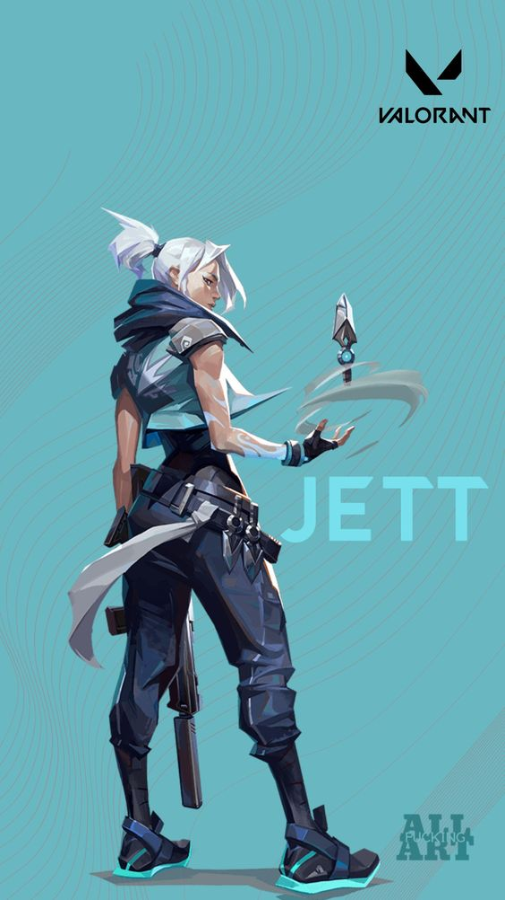

JETT
Jett is the 10th Agent to join the VALORANT PROTOCOL.
She is a Radiant with powers that allow her to control the wind.
Representing her home country of South Korea,
Jett's agile and evasive fighting style lets her take risks no one else can.
She runs circles around every skirmish, cutting enemies before they even know what hit them.

Berikut merupakan link gameplay agent jett
VALORANT Jett Spotlight Trailer
| NAME | COUNTRY | CLASS | ROLE |
| JETT | SOUTH KOREA | RADIANT | DUELIST |